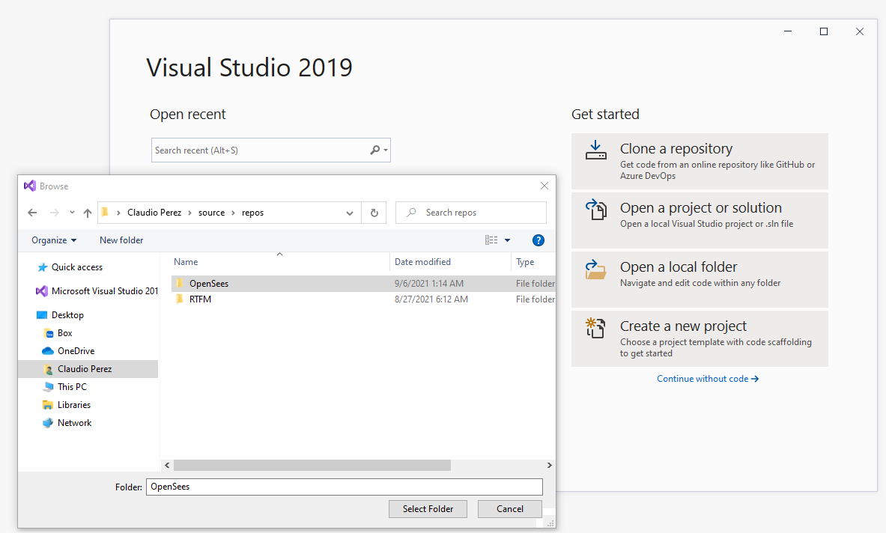

2.2. Compiling Basics¶
The basic steps for building OpenSees can be broken down as follows:
Obtain the OpenSees source code
Obtain the necessary dependencies
Generate and execute the build
Before getting started, make sure that you have installed CMake and have suitable C/C++ and Fortran compiler tool chains configured on your computer (see Compiler tool-chain).
The OpenSees source code repository is hosted on Github and can be downloaded directly from https://github.com/OpenSees/OpenSees. Alternatively, you can clone the repository from a terminal by running the following command:
~$ git clone https://github.com/OpenSees/OpenSees
If you are planning to contribute changes back to the OpenSees project, you should first fork the repository as mentioned in Source Control.
Tcl is the only dependency required for a basic OpenSees build that is not already bundled into the source repository on Github. Most Linux distributions and MacOS will already have this installed. A package manager offers the simplest and cleanest way to install such dependencies (see Package management).
Explanation needed for adding Tcl paths to CMake config
The final step is to generate and run a build system. Users on any platform should be able to use Option I below from a suitable command line environment. Option II outlines an alternative process for building with the graphical Visual Studio environment on Windows.
2.2.1. Option I: Command line¶
Open a terminal that is aware of you compiler tool-chain and package manager, or make sure to run any necessary activation scripts to this end. For example, if you are using Anaconda on Windows to manage dependencies, the following steps should be executed through the Anaconda Prompt (on MacOS or Linux this is likely integrated directly into your default terminal application).
OpenSees $ mkdir build
OpenSees $ cd build
build $ cmake ..
build $ cmake --build . --target OpenSeesTcl
2.2.2. Option II: Visual Studio¶
The following steps outline the process of building OpenSees with Visual Studio.
This section is incomplete
Open Visual Studio.

Open the folder containing the OpenSees source repository
Once the directory has been opened, Visual Studio should automatically recognize the
CMakeLists.txtfile and begin generating the project build files. Once these have been successfully generated, the CMake output console should contain a similar success message to that shown below.
Note
In order for this step to succeed, Visual Studio must be correctly configured with a Fortran compiler. See Compiler tool-chain for more information.
{kind=link}